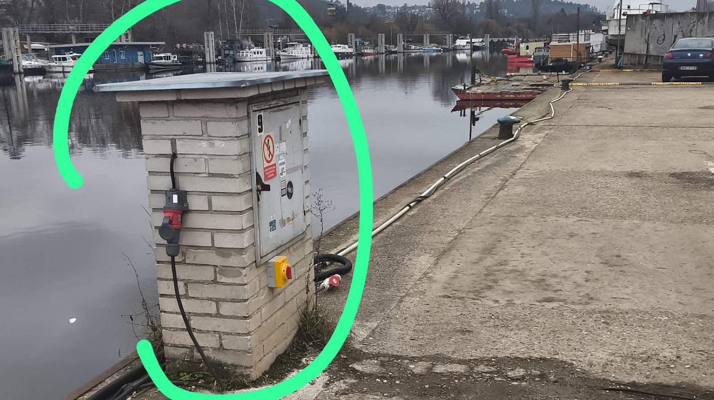
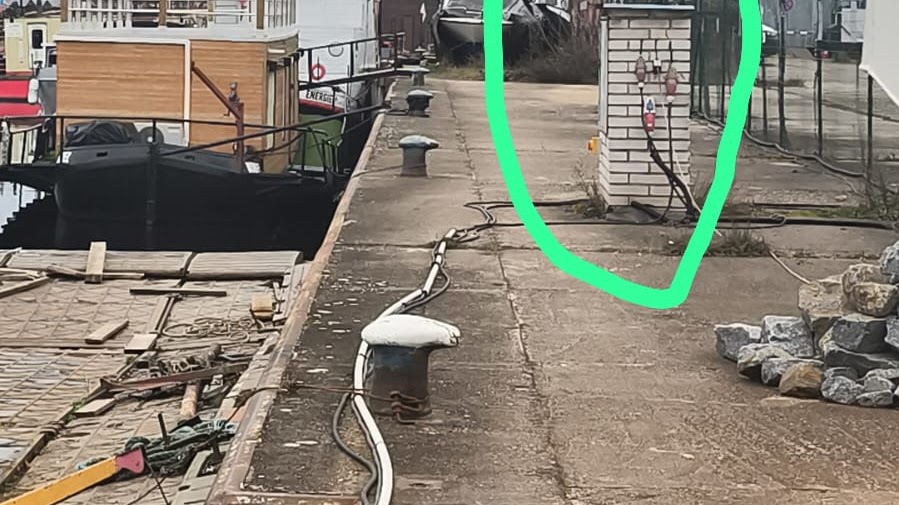

Sähkökatko – ensiapu
Sähkökatkot asuntoveneissä ovat yleisempiä kuin asunnoissa kapasiteetista johtuvien syiden vuoksi ja enemmän vaatimuksia säästä, erityisesti erittäin lämpiminä tai hyvin kylminä päivinä.
Jos pystyt toimimaan sähkölaudalla, tarkista paneelit kuten tässä kuvassa. Tärkeää: Käytä aina kumipään kenkiä, kun kosket sähköpaneeliin tai laitteeseen!
Katso alla ja soita asiaan tarpeen mukaan!

Kaikkien kytkimien pitäisi olla päällä (paitsi jos on merkki, nauha tai jotain epätavallista).

Sähköpaneelit ovat laiturilla, samanlaisia kuin tämä. Jotkut ovat selkää toisilleen.

Tarkistakaa nämä sinisen portin lähellä.

Ne voidaan myös pudottaa.

Tarkista parkkipaikan alussa, onko numero 9 päällä (


Numero 9 sisäpuolella (tarvitset avaimen tai jotain, joka pyörittää neliön)

Vielä kauemmas, numero 8 on muutama kytkin joka myös täytyy olla päällä.

Tarkista nämä sisältä. Tarkista aina, ettei kukaan tee töitä virran varrella.
TÄRKEÄÄ: ILMOITTAKAA, MIKÄ KYTKIN EI TOIMINUT. OTA KUVA ENNEN JA JÄLKEEN.
Tämä sivu on käännetty automaattisesti englanninkielisestä oppaasta. Epäselvissä tapauksissa englanninkielinen versio on voimassa. Englanninkielinen alkuperäinen